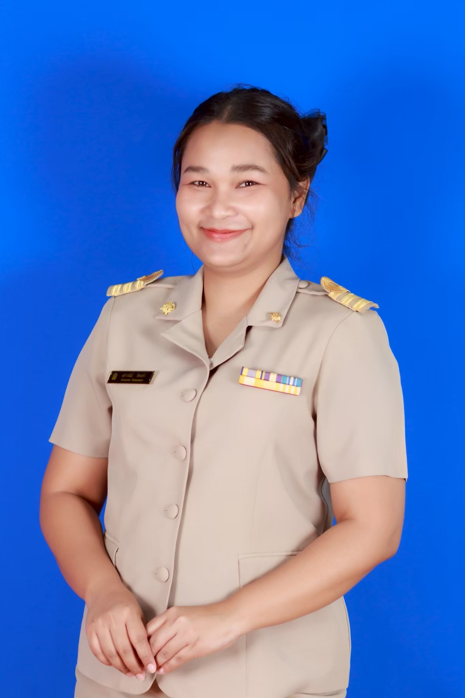
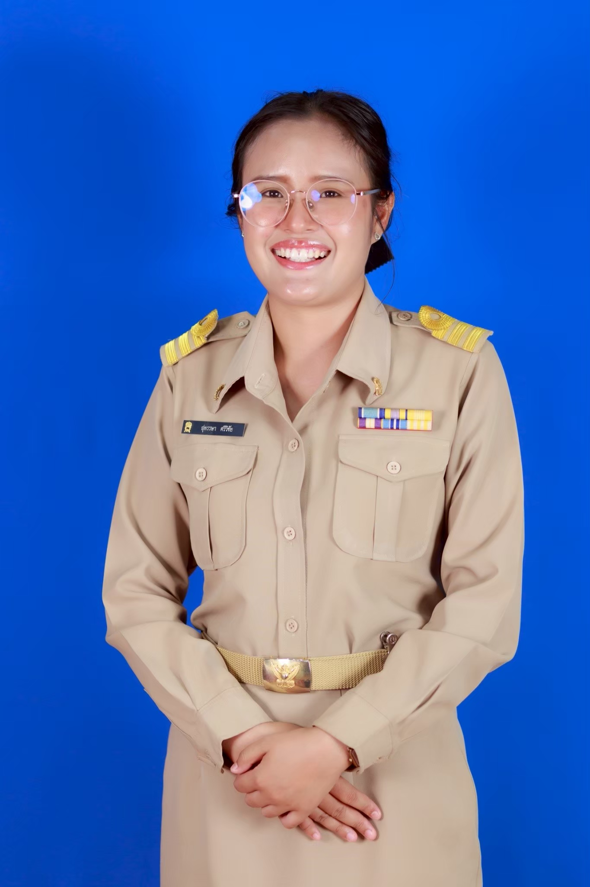
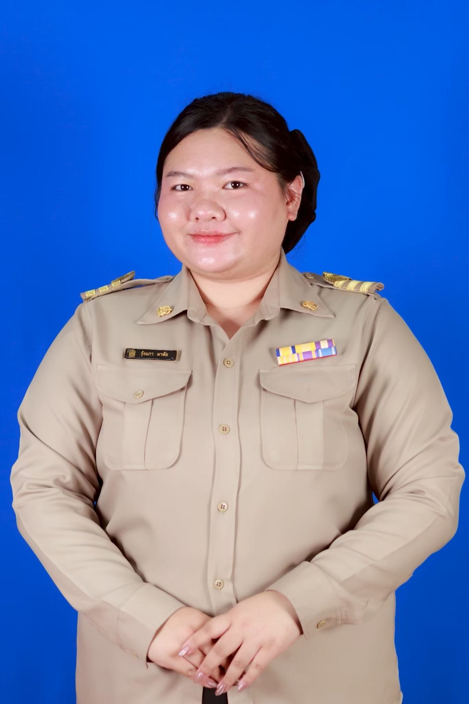
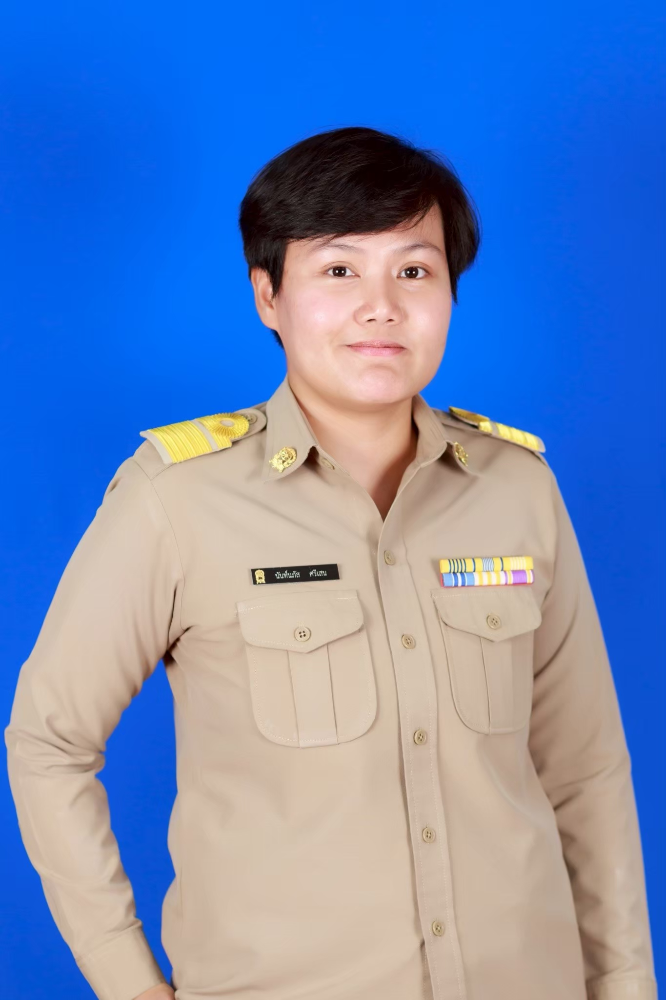
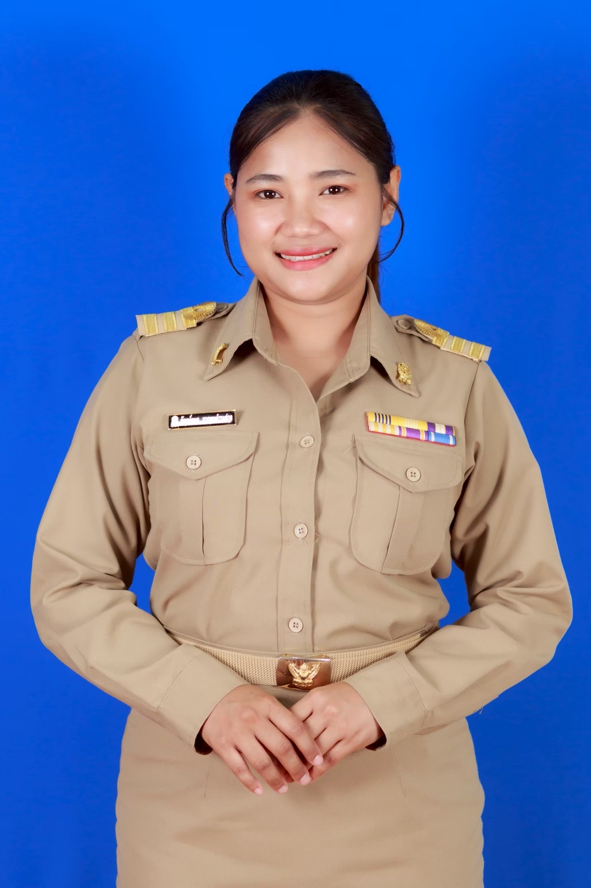
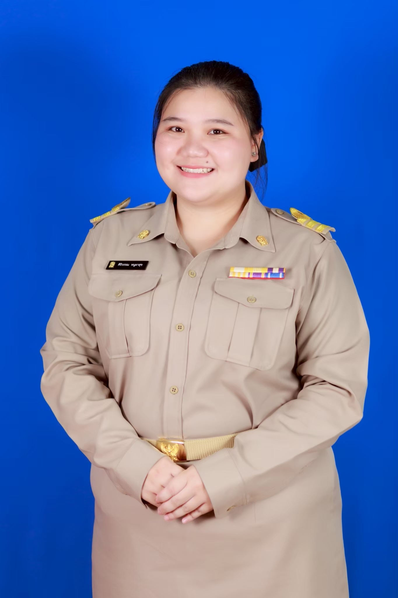

นายไชยพร มะลิลา
ผู้อำนวยการโรงเรียน
แสดงโครงสร้างผู้รับผิดชอบกลุ่มบริหารงานบุคคล พร้อมขอบข่ายงานและช่องทางประสานงาน
ผู้อำนวยการโรงเรียน

รองผู้อำนวยการโรงเรียน

รองหัวหน้ากลุ่มบริหารงานบุคคล
หัวหน้ากลุ่มบริหารงานบุคคล
เจ้าหน้าที่และเลขานุการ
หัวหน้างานครูและบุคลากรทางการศึกษา

หัวหน้างานประเมินและเลื่อนวิทยฐานะ
หัวหน้างานวิเทศสัมพันธ์
หัวหน้างานทะเบียนประวัติและวันลา
หัวหน้างานธุรการและอำนวยการ
เจ้าหน้าที่งานครูและบุคลากรทางการศึกษา
เจ้าหน้าที่งานประเมินและวิทยฐานะ
เจ้าหน้าที่งานวิเทศสัมพันธ์
เจ้าหน้าที่งานทะเบียนประวัติ

เจ้าหน้าที่งานธุรการและอำนวยการ
เจ้าหน้าที่งานครูและบุคลากรทางการศึกษา

เจ้าหน้าที่และเลขานุการงานประเมินและวิทยฐานะ

เจ้าหน้าที่และเลขานุการงานวิเทศสัมพันธ์
เจ้าหน้าที่และเลขานุการงานทะเบียนประวัติ

เจ้าหน้าที่และเลขานุการงานธุรการและอำนวยการ
เจ้าหน้าที่งานครูและบุคลากรทางการศึกษา

จ้าหน้าที่และเลขานุการงานธุรการและอำนวยการ
เจ้าหน้าที่และเลขานุการงานครูและบุคลากรทางการศึกษา